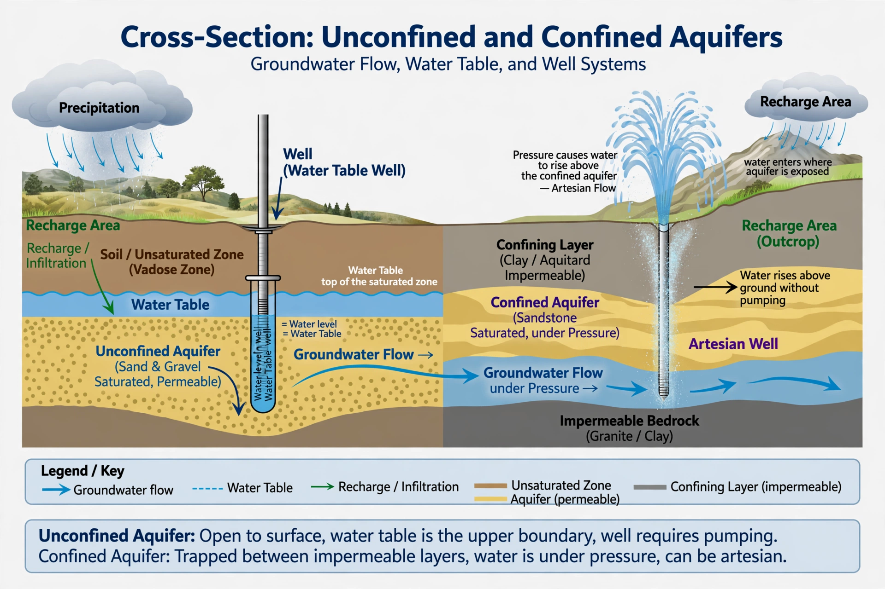

Groundwater

Groundwater is the water held underground in the pores of soil and sediment and the fractures of rock. It is the world's largest store of liquid fresh water — far exceeding lakes and rivers — and it supplies drinking water to billions of people and a large share of irrigation.
Groundwater moves, but usually slowly: metres per year in many aquifers, against metres per second in rivers. Its hidden nature makes it easy to overuse and slow to forgive.
Aquifers and the water table
The water table is the level below which the ground is saturated. Permeable saturated formations that can yield useful water are aquifers: unconfined aquifers open to recharge from above, and confined aquifers sealed beneath impermeable layers, whose water may be under pressure (artesian). Classic systems include the Ogallala Aquifer beneath the US High Plains and the Great Artesian Basin of Australia. Flow through porous media is described by Darcy's law, the foundation of hydrogeology.
Rain and rivers recharge aquifers; wells, springs, wetlands and baseflow to rivers discharge them. Some groundwater is effectively fossil water, recharged in wetter climates thousands of years ago, as in the Nubian Sandstone system beneath the Sahara.
Depletion and pollution
Pumping now exceeds recharge in many of the world's great agricultural aquifers. Consequences include falling wells, drying springs and wetlands, land subsidence (parts of California's San Joaquin Valley and cities such as Jakarta have sunk by metres) and seawater intrusion into coastal aquifers. Because flow is slow, contamination — nitrate, solvents, PFAS, arsenic — can persist for generations. See {L('Water_cycle')} and {L('Water_pollution')}.
See also: Water cycle · Hydrology · Water pollution · Sinkhole · Soil